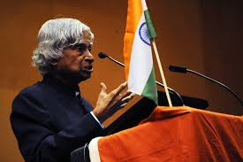

A great scientist, teacher, and former President of India who inspired millions through his vision, simplicity, and dedication.
Explore Journey
Dr. Avul Pakir Jainulabdeen Abdul Kalam was one of India's most respected personalities. He played an important role in India's space and missile development programs. Because of his contribution to science and defense, he became known as the Missile Man of India.
Worked with ISRO and DRDO and contributed to India's missile and space programs.
Served as the 11th President of India and was loved as the People's President.
Always encouraged students to dream big and work hard to achieve their goals.
Born in Rameswaram, Tamil Nadu.
Started his career in science and aerospace engineering.
Became the 11th President of India.
Passed away while delivering a lecture, doing what he loved most — teaching.
“Dream is not that which you see while sleeping, it is something that does not let you sleep.”